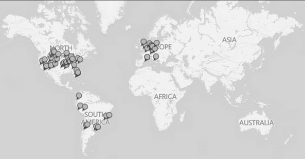

HOME
PORTFOLIO
ABOUT
CONTACT
International Experience

Lived abroad for over nine months during 2013-14
Worked at two different startups in Chile and Argentina
Conversational in Spanish
Studied at WHU Otto Beisheim School of Management in Germany